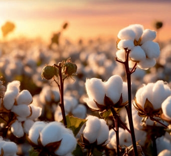
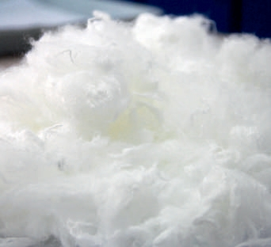

Yarn forms the foundation of textiles, and at Sintex, it embodies a legacy of quality, innovation, and progress. With decades of expertise, Sintex Yarns caters to diverse industries across the globe, offering high-performance solutions that redefine industry standards.
From premium cotton yarns to specialty blends like Linen blends, Hemp Blends, Banana blends, Nettle Loop & Pine Loop. Sintex’s portfolio reflects versatility and adaptability. These products cater to a wide range of applications, ensuring durability, aesthetic appeal, and sustainability.
Why Global Brands Choose Sintex
We bring together:
At sintex, excellence begins with exceptional inputs. We source only the finest raw materials from across the globe —ensuring every yarn we produce delivers exceptional strength, consistency and performance you can count on.e

Our cotton portfolio features globally renowned varieties including -6, MCU5, Bunny, DCH-32, Australian, Giza, Supima and premium American cottons. These fibers are handpicked for their purity, strength, consistency and spinnability, making them ideal for high performance yarns trusted across global textile applications.

We blend high-grade cellulosic fibers to meet the rising demand for sustainable, modern textiles. Delivering the perfect harmony of softness, strength and environmental responsibility, these fibers elevate every yarn with quality you can feel — and values you can trust.
Sourced from the world’s best European flax crops, our linen fibers bring unmatched natural strength, airy comfort and timeless texture. Perfect for high-end fashion and home textiles, these fibers deliver breathability, durability and a touch of understated luxury.